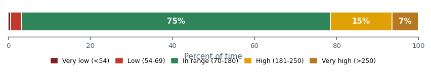
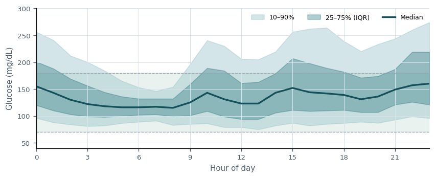
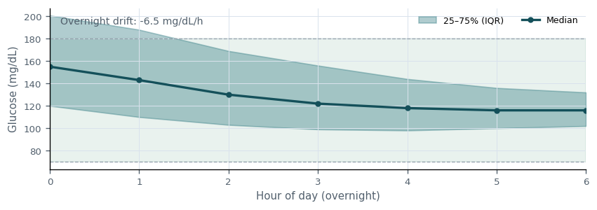
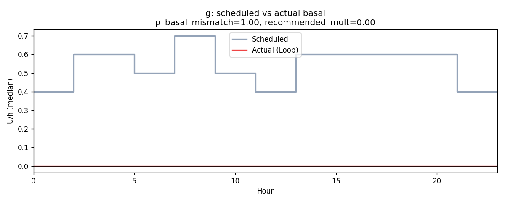
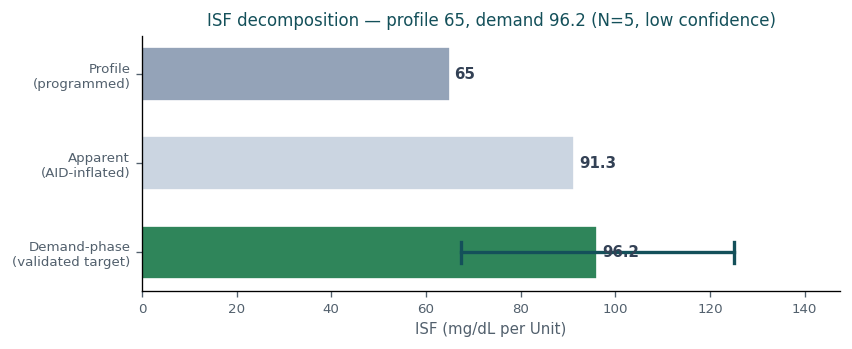
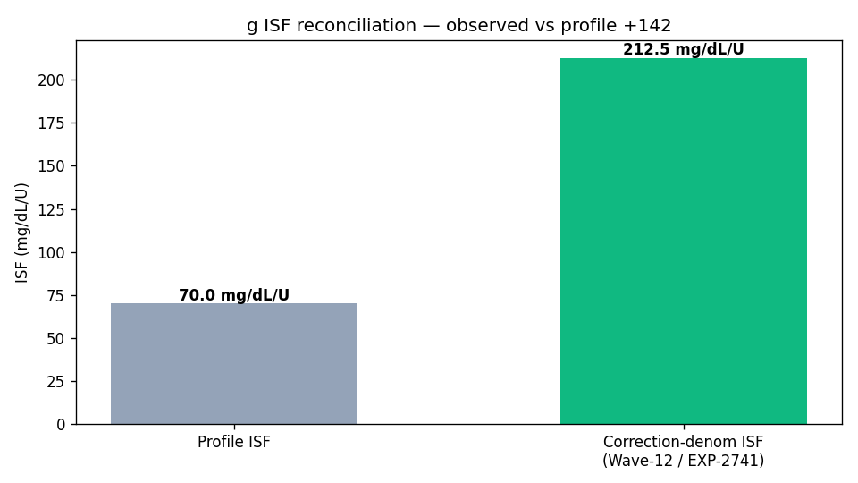
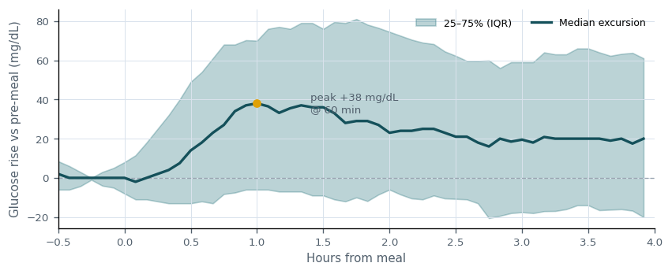

Clinical Decision Support — patient g¶
Living document, last changed 2026-07-01 at eb003533.
Generated: 2026-07-01T18:27:11.197100+00:00
Insulin sufficiency¶
Overall insulin delivery shows opportunity for improvement (TIR 75%, TBR<70 3.2%, TAR>180 22%). 1 risk(s) identified; 0 parameter change(s) proposed this cycle.
Main risks: - Glycemic variability high (CV 41% vs target 36%).
What's working: - Time-in-range at goal (TIR 75%). - Hypoglycemia within target (TBR<70 3.2%).
Time-in-range distribution

Share of time in each glycemic band over 46,151 readings. Green is the 70-180 mg/dL target; reds are lows, ambers are highs.
Ambulatory glucose profile (AGP)

Median glucose by time of day with interquartile (25–75%) and 10–90% bands. The green zone is the 70–180 mg/dL target; a flat median inside it is the goal.
Recommendations¶
Basal¶
Decision: NO CHANGE
Hold reason: insufficient_evidence
Summary: Basal: no change recommended (insufficient evidence (confidence 0.22 below 0.50)).
Justification: Basal reviewed: a directional signal exists (theoretical target 0.36) but is held due to insufficient evidence (confidence 0.22 below 0.50). Re-evaluate at the next review.
Expected outcomes (2-week):
| Metric | Baseline | Expected | Direction |
|---|---|---|---|
| TIR | 75.2% | 75.2% | stable |
| TBR<70 | 3.24% | 3.24% | stable |
| TAR>180 | 21.5% | 21.5% | stable |
Overnight glucose profile (00:00–06:00)

Median overnight glucose with IQR. A rising trend suggests basal is too low; a falling trend suggests it is too high. Used to contextualize the basal recommendation.
Scheduled vs actual basal

Median programmed basal vs what the loop actually delivered by hour. Persistent loop deviation indicates the scheduled rate is mismatched in that direction.
Success criteria (revisit in 14 days): - Basal held: glycemic metrics remain within tolerance of baseline over the 2-week window. - No new hypoglycemia signal (TBR<70 stays below 4%).
Stop / escalate criteria: - TBR<70 rises by more than 1 pp -> escalate review. - TIR declines materially -> re-open Basal for change.
ISF¶
Decision: NO CHANGE
Hold reason: insufficient_evidence
Summary: ISF: no change recommended (insufficient evidence (confidence 0.13 below 0.50)).
Justification: ISF reviewed: a directional signal exists (theoretical target 98) but is held due to insufficient evidence (confidence 0.13 below 0.50). Re-evaluate at the next review.
Expected outcomes (2-week):
| Metric | Baseline | Expected | Direction |
|---|---|---|---|
| TIR | 75.2% | 75.2% | stable |
| TBR<70 | 3.24% | 3.24% | stable |
| TAR>180 | 21.5% | 21.5% | stable |
Demand-phase ISF decomposition

Profile ISF vs the apparent/correction ISF (amplified by AID compensation) vs the demand-phase ISF — the validated 0–2h insulin effect (EXP-2651) and the true target, shown with its 95% confidence interval. The apparent value is not the target; the recommendation tracks the demand-phase value, bounded by a safety margin (EXP-2738).
ISF reconciliation (profile vs observed)

Profile ISF vs the correction-derived (observed/apparent) ISF. The observed value is amplified by AID compensation (basal suspension during corrections), so it is NOT a direct ISF target: the recommendation deliberately preserves the controller's residual safety margin (EXP-2738) rather than chasing the apparent value. Separately, a lower effective ISF for large single corrections is dose-shaping guidance (split the dose), not a baseline schedule change.
Success criteria (revisit in 14 days): - ISF held: glycemic metrics remain within tolerance of baseline over the 2-week window. - No new hypoglycemia signal (TBR<70 stays below 4%).
Stop / escalate criteria: - TBR<70 rises by more than 1 pp -> escalate review. - TIR declines materially -> re-open ISF for change.
Carb ratio¶
Decision: NO CHANGE
Hold reason: insufficient_evidence
Summary: Carb ratio: no change recommended (insufficient evidence (confidence 0.26 below 0.50)).
Justification: Carb ratio reviewed: a directional signal exists (theoretical target 6.7) but is held due to insufficient evidence (confidence 0.26 below 0.50). Re-evaluate at the next review.
Expected outcomes (2-week):
| Metric | Baseline | Expected | Direction |
|---|---|---|---|
| TIR | 75.2% | 75.2% | stable |
| TBR<70 | 3.24% | 3.24% | stable |
| TAR>180 | 21.5% | 21.5% | stable |
Post-meal glucose excursion

Median glucose rise after 255 carb-counted, bolused meals (peak +38 mg/dL at 60 min; +20 mg/dL vs baseline at 4 h). Carb ratio held this cycle; this profile is the baseline to compare against at the next review.
Success criteria (revisit in 14 days): - Carb ratio held: glycemic metrics remain within tolerance of baseline over the 2-week window. - No new hypoglycemia signal (TBR<70 stays below 4%).
Stop / escalate criteria: - TBR<70 rises by more than 1 pp -> escalate review. - TIR declines materially -> re-open Carb ratio for change.
Overall justification¶
No parameter changes are recommended this cycle; all domains were reviewed and held with documented rationale. Held/deferred: Basal (insufficient_evidence), ISF (insufficient_evidence), Carb ratio (insufficient_evidence).
Addenda¶
- Factors considered: time-in-range distribution, hypo/hyper burden, glycemic variability, per-parameter advisory evidence, and cross-parameter sequencing.
- Basal theoretical optimum: 0.36 (-40% vs current 0.6); held this cycle.
- ISF theoretical optimum: 98 (+51% vs current 65); held this cycle.
- Carb ratio theoretical optimum: 6.7 (-21% vs current 8.5); held this cycle.
- Risks reviewed and mitigated: Glycemic variability high (CV 41% vs target 36%).
- Mitigations: changes are bounded by a per-cycle titration cap; carb ratio is sequenced after basal/ISF to avoid confounded adjustment; explicit stop/escalate criteria accompany every recommendation for the 2-week feedback loop.
Reimbursement justification¶
Data sufficiency: Analysis based on 180 days of CGM data (46,151 readings). Sufficient for time-in-range and titration assessment.
Risks reviewed: - Glycemic variability high (CV 41% vs target 36%).
Mitigations: - Recommendations bounded by a safe per-cycle titration cap. - Carb ratio sequenced after basal/ISF to prevent confounded change. - Explicit stop/escalate criteria defined for each recommendation.
Alternatives discussed: - Considered no-change vs incremental titration vs settings reboot. - Theoretical optima documented but deferred in favor of safe steps.
Patient-specific barriers: - No patient-reported adherence, supply, or prescription barriers noted at this review.
Agreed plan: Agreed plan: maintain current settings with documented rationale; re-evaluate in 2 weeks.
Expected trajectory: Projected time-in-range at next review: ~75% (baseline 75%). Outcome will be scored against the per-recommendation success and stop/escalate criteria.
Follow-up date: 2026-07-15